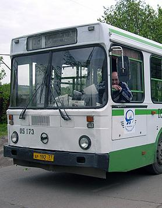

Москва — Калязин. Расписание автобусов, такси и телефон вокзала.
| Уважаемые пассажиры! Обращаем ваше внимание на изменения в расписании движения автобусов по маршруту Москва — Калязин — Кашин. С 18 марта 2013 года отправление автобусов из г.Москва будет осуществляться только с автостанции «Тушинская» станция метро «Тушинская». Время отправления пассажирского транспорта рейсом Москва — Кашин в 8:00 и в 11:30. Единые телефоны бронирования билетов 8 (495) 229-37-64 или 8 (495) 411-94-96. Пожалуйста, учитывайте новое расписание движения общественного транспорта при планировании своего маршрута! |

Изменения в расписании: из Москвы отправка ежедневно 8.00, 11.30, 14.00, 18.00 ежедневно. Отправка из Калязина ежедневно в 4.00, 9.00, 13.00, в 18.00 в воскресенье. В Москве билеты приобретаются в автобусе.
Автобус Москва Калязин отправляется от Савеловского вокзала рейсами: 8:00, 11:30, 14:00, 18:00, 22:00. Время в пути не более 3,5 часов с учетом столичных пробок. Кроме того, вы можете сесть на автобус Москва — Сергиев Посад. Отправляется от вокзала каждые 10-15 минут. Но из Сергиева Посада в Калязин можно выехать только в 16.15 и 18.30.
Автобусы Калязин – Москва отправляются от вокзала в 4.00, 9.00 и 13.00. Обратные рейсы с пересадкой в Сергиевом Посаде из города отправляются в 5.50, 11.30, 14.45 и в 18.45. Телефон автовокзала: 8-910-841-28-76
Расписание внутригородских автобусов и такси:
В городе работают две компании предоставляющие услуги пассажирских перевозок. Популярная служба такси: 8(48249) 25-4-25 и недавно открывшаяся компания такси «Фортуна»: 8(48249) 23-000. Аккуратные водители и доставка в любую точку Калязинского района.
Общественный транспорт представлен местным АПТ «Тверьавтотранс». Автобус отправляется из города в 00 минут каждого часа в сторону Заречья. Обратно он движется каждые 30 минут каждого часа в сторону Сушзавода. Последний рейс в 21.00.
Информация о работе магазинов, кафе и ресторанов:
В городе Калязин всех проголодавшися обслуживает около 4-х кафе: «Визит» на выезде из города (до 24.00, без выходных), «ФАМП» кафе при гостинице (до 24.00, без выходных), «Абриколь» в районе Дома Культуры (до 24.00, без выходных) и «Столовая» в районе общежития КМТ (до 15.00, пт., сб., вс. — выходные). Летом, в сезон высокой туристической активности, многие магазины работают круглосуточно.
Согласно новому ФЗ, ликероводочную продукцию можно приобрести с 9.00 до 21.00. Пожалуйста, заранее покупайте данную продукцию в необходимых объемах. Желаем приятного отдыха!
| Читайте на сайте KALYAZIN.MSK.RU! | ||
| РАБОТА В КАЛЯЗИНЕ с размещением в общежитии и обучением представлена на этой странице. У нас всегда есть вакансии для желающих заработать в свободное время. Читаем актуальную базу вакансий и зарабатываем. | СНИМУ ИЛИ СДАМ квартиру в городе. Эту информацию мы собрали из нескольких источников: через специальную форму на сайте, в местной газете, а также узнали об аренде недвижимости у своих многочисленных знакомых. | СТОМАТОЛОГИЯ Частный стоматологический кабинет предлагает услуги лечения и протезирования зубов. Высококлассные специалисты окажут профессиональные услуги чистки и отбеливания зубов. Гарантия на пломбы до 1 года! |
— Расписание автобусов Калязин — Сергиев Посад с остановками на пути следования.
— Расписание автобусов Калязин — Тверь и движение транспорта в обратном направлении.